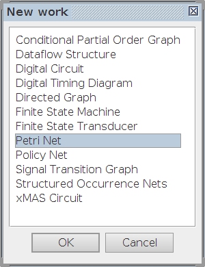
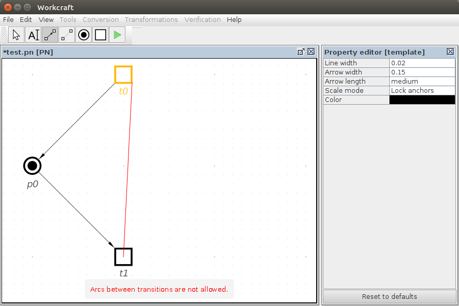

Table of Contents
Petri Net plugin
Familiarise yourself with Workcraft interface to learn its common features that are available for all plugins.
This plugin is intended for capturing, simulation and verification of Petri net models.
Capturing
In order to create a Petri net work choose File→Create work… menu item and in the New work dialogue select Petri Net as the model type.

A Petri net model can be captured by dropping places and transitions onto the editor panel and connecting them with the producing and consuming arcs.
With the place generator ![[P] Place](editor_tools-place.png "[P] Place") or transition generator
or transition generator ![[T] Transition](editor_tools-transition.png "[T] Transition") activated you can create a series of places or transition respectively, by clicking the editor panel in the position you want a new node to appear.
activated you can create a series of places or transition respectively, by clicking the editor panel in the position you want a new node to appear.
When the connection tool ![[C] Connect](editor_tools-connect.png "[C] Connect") is active you can connect places and transitions with arcs by first click the source node and then the destination node. If you hold Ctrl then the destination node becomes a source for the next arc making it easier to form a sequence of connected nodes. Note that places can only be connected to transitions and transitions can only be connected to places. If you attempt to connect two nodes of the same type, then a warning will be issued that connections is not valid.
is active you can connect places and transitions with arcs by first click the source node and then the destination node. If you hold Ctrl then the destination node becomes a source for the next arc making it easier to form a sequence of connected nodes. Note that places can only be connected to transitions and transitions can only be connected to places. If you attempt to connect two nodes of the same type, then a warning will be issued that connections is not valid.

Editing
For editing the model activate the selection tool ![[S] Select](editor_tools-select.png "[S] Select") . All the standard editing features (select, drag-and-drop, delete, copy, undo, group, etc.) work the same - see generic help on Selection controls and Property editor for details.
. All the standard editing features (select, drag-and-drop, delete, copy, undo, group, etc.) work the same - see generic help on Selection controls and Property editor for details.

The only new editing feature is double clicking on a place:
- Double-click on an empty place to mark it with a token.
- Double-click a place marked with a token to remove the token.
- If a place has more than one token then double-clicking does not have any effect.
Similar to all the other plugins, textual comments can be created by activating the ![[N] Text Note](editor_tools-text_note.png "[N] Text Note") tool and clicking the editor panel in the position you want to put the text. Double-click on the note box to edit its text label in-place or do it through the property editor panel when the note is selected.
tool and clicking the editor panel in the position you want to put the text. Double-click on the note box to edit its text label in-place or do it through the property editor panel when the note is selected.
Simulation
For simulation of a Petri net model activate the simulation tool ![[M] Simulate](editor_tools-simulate.png "[M] Simulate") . The enabled transitions are highlighted and can be fired by clicking them. The Tool controls panel of the simulation tool provides the means for analysis and navigation through the simulation trace, see generic help on Simulation controls for details.
. The enabled transitions are highlighted and can be fired by clicking them. The Tool controls panel of the simulation tool provides the means for analysis and navigation through the simulation trace, see generic help on Simulation controls for details.

Verification
A Petri net can be verified for deadlocks via Verification→Deadlock [MPSat] menu. Custom properties can be verified by formulating a reachability analysis problem in Reach language. This is done a specialised MPSat configuration window accessible via Verification→Custom properties [MPSat]… menu.
If the verified property is not satisfied, then a trace (or several traces) leading to the violation is reported. The trace can be passed to the the simulation tool (by clicking the Play button) for playback and analysis of the reasons leading to the violation.